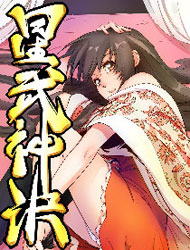
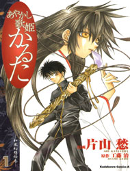
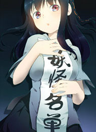
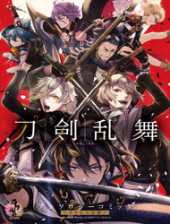
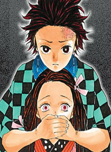
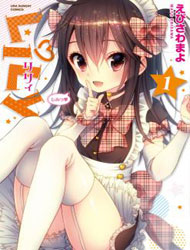

Fate/Extra - Mikon! Kyasuko-chan!?
Vol.005 Ch.030: Gawain VS Karna 001 
Star Martial God Technique
Ch.031: Star Flame Blade 
Ayakashi Utahime Karuta
Vol.001 Ch.005: Song Of Demon Slaying (Part 001)
Kimi wa, Ore ga Suki Datte Ittara Donna Kao Suru Darou.
Ch.002 
Yaoguai Mingdan
Ch.243: Random Door
Yakushoku Distpiari - Gesellshaft Blue
Vol.004 Ch.024: Information, Steel Frames, Fastidiousness, and Decoration
Fire Punch
Ch.035 
Touken Ranbu Anthology ~ SQEX Formation ~
Vol.001 Ch.004: First Time at Horsekeeping / Irohe

The Legendary Moonlight Sculptor
Chapter 081 
Kimetsu no Yaiba
Ch.045: Joint Trial of the Demon Hunter Pillars
Mousou Telepathy
Ch.104: Digging a Deeper Grave
unTOUCHable
Chapter 129
Tenkuu Shinpan
Episode 153
Aisopos
Chapter 121
Oh! Lord Jesus
Chapter 016
Yami no Kodou
Vol.025 Ch.100
Amalgam of Distortion
Vol.003 Ch.011: Chapter 011
Yuragi-sou no Yuuna-san
Ch.046: Yuna-san and the New Morning
Minato Machi Neko Machi
Vol.001 Ch.004: Ms. Kano's Sleeping Lover
Takeda Shingen (YOKOYAMA Mitsuteru)
Vol.007 Ch.054
Working
Vol.010 Ch.187.006: Nazuna Chapter
Gokusai
Vol.001 Ch.005: Art.005- The Cursed Painting
Knights & Magic
Ch.012
Pin to Kona
Vol.003 Ch.010
Ibitsu (OKADA Kazuto)
vol.006 ch.052
Hahri's Lumpy Boardhouse
ch.026
Koukaku Kidoutai 2
vol.001 ch.006
Forever Mine
ch.006
Bastard's Dead Man
ch.011
Tower of God
[Season 002] Ep. 233
Wind Breaker
vol.002 ch.108
Kuro no Tantei
Vol.007 Ch.030: Case 030. The End and A Beginning [Final]
Trump (LEE Chae-Eun)
vol.002 ch.137
Hive
vol.003 ch.145
Good Robot
Vol.001 Ch.007 Read Online
Full Ahead Coco
Vol.018 Ch.159: Carapace
Bastard (HWANG Youngchan)
Ep. 084
Kikou Shoujo wa Kizutsukanai
Ch.051.005: "Extra Story"
The Descending Moon at the Foot of the Mountain
Ch.000b
Tsurezure Children
Vol.003 Ch.045.006: Plus! Two (Omake)

LiLy (EBISAWA Mayo)
Genres: Gender Bender, Comedy, Ecchi, School Life, Slice of Life
Latest: Vol.001 Ch.002